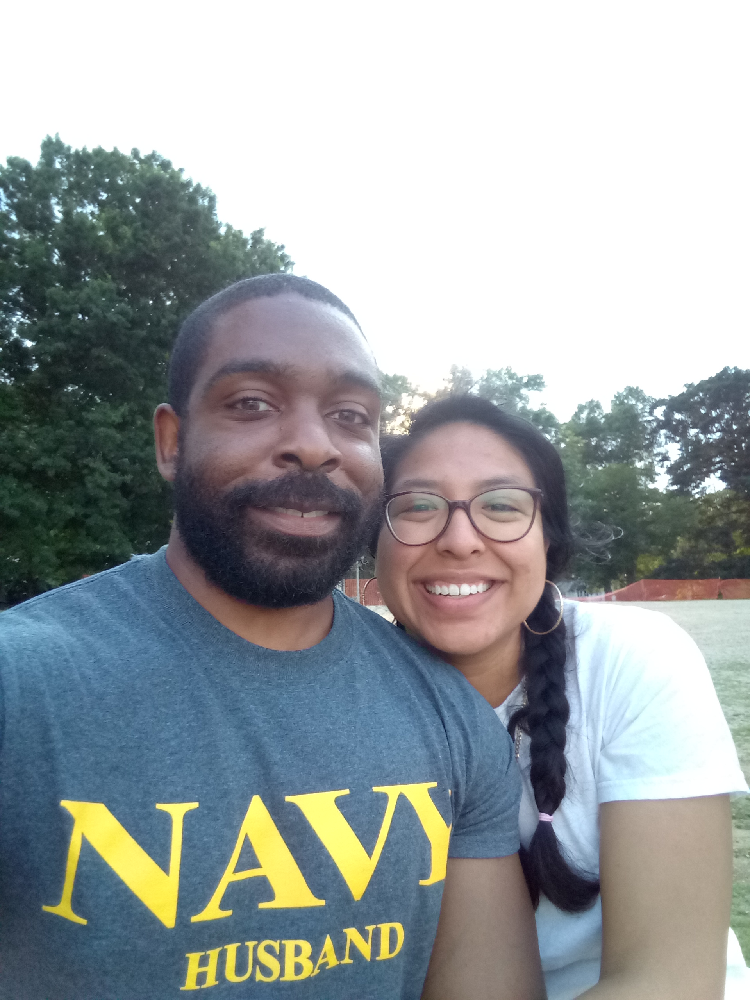

Keith was born and raised in Southern California.
He first learned to program at the age of 27 during his first year at Southern Connecticut State University.
Since then, he has continued to improve his programming abilities and understanding of computers through much course
work throughout the years. He has experience with object oriented programming, functional program, network programming,
git and git hub, databases, web development, linux OS, multiple programming languages
(including Java and PHP YUCK!), distributed systems, and plenty of group projects. CSS is his kryptonite.
While he’s procrastinating on assignments, Keith enjoys strength training, watching anime, and spending time with his wife. He hopes to graduate and begin the next chapter of his random life.